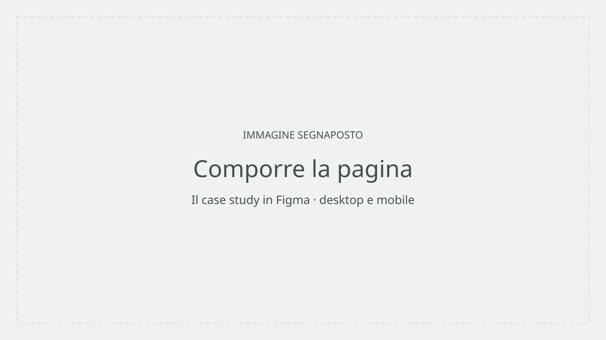
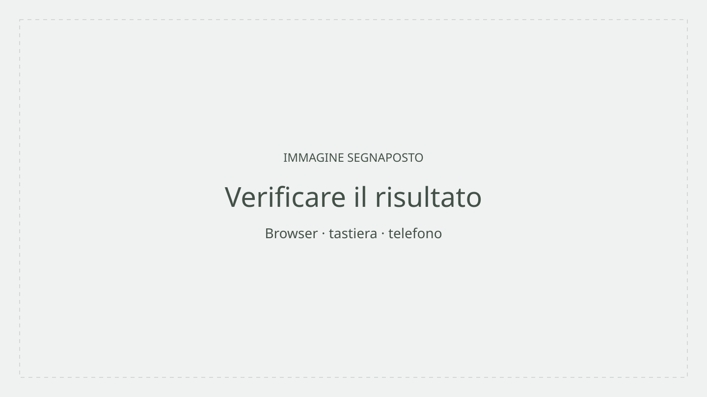

Lorenzo Longhi • UI/UX Design • 2026
Allen Iverson
the price of keeping it real
Un case study sul brand identity di Allen Iverson — come un atleta ha sfidato le regole del sistema e trasformato lo streetwear in un linguaggio culturale globale.

Studente
Lorenzo Longhi
Corso
ITS Web Design e Strategie
Digitali
Modulo
UX/UI Design
Scuola e anno
ITS Academy I-Crea 2026
Concept
dal progetto al case study
Anche questa pagina è un progetto
Per raccontare Iverson, the price of keeping it real ho progettato una seconda interfaccia: questo case study. Ho studiato Primer Brand e combinato i suoi componenti per dare una forma coerente al racconto.


